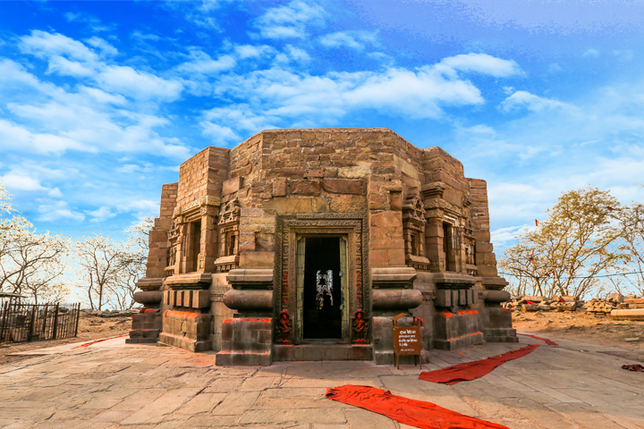

Bihar Tourism · Places to Visit · Famous Food
Bihar Tourism: Places to Visit and Famous Food
Plan Bihar tourism around Bodh Gaya, Nalanda, Patna, and wildlife reserves, then eat the state's famous food — especially litti chokha, makhana, and festival sweets.
Explore Places to VisitPlaces to Visit in Bihar
Popular Bihar tourism destinations, from UNESCO sites to forts and wildlife
This Bihar tourism guide lists places to visit in Bihar for heritage, pilgrimage, and nature — plus links to Bihar food such as litti chokha.
 UNESCO Heritage
UNESCO Heritage
Mahabodhi Temple
UNESCO World Heritage temple in Bodh Gaya, marking the place where the Buddha attained enlightenment under the Bodhi tree.
 Sacred Site
Sacred Site
Vishnupad Temple
A major Hindu shrine on the Phalgu River in Gaya, visited by pilgrims for pind daan and ancestral rites.
 Ancient Stupa
Ancient Stupa
Kesariya Stupa
A vast terraced Buddhist stupa in East Champaran, among the largest of its kind, linked to the Buddha's last journey.
 Wildlife Sanctuary
Wildlife Sanctuary
Valmiki Tiger Reserve
Bihar's only tiger reserve, in West Champaran, with sal forests, the Gandak river, and rich Himalayan foothill wildlife.
 Patna Landmark
Patna Landmark
Buddha Smriti Park
A contemporary memorial park in Patna with a central stupa, relic chamber, and quiet gardens for reflection.

Ancient TempleMundeshwari Devi Temple
An octagonal hill shrine in Kaimur, among India's oldest continuously worshipped temples, dedicated to Shiva and Shakti.
 UNESCO Heritage
UNESCO Heritage
Nalanda Mahavihara
UNESCO-listed ruins of the great monastic university that drew scholars from across Asia for centuries.
 Sikh Pilgrimage
Sikh Pilgrimage
Takhat Sri Harmandir Ji
Patna Sahib, one of the five Takhts of Sikhism, marks the birthplace of Guru Gobind Singh.
 Historic Monument
Historic Monument
Golghar
A beehive-shaped granary built in 1786 after the Bengal famine, with a spiral walkway and views of Patna and the Ganga.
 Ancient University
Ancient University
Ruins of Vikramshila
Excavated remains of a Pala-era Buddhist university near Bhagalpur, once a major centre of Vajrayana learning.
 Mauryan Caves
Mauryan Caves
Barabar Caves
India's oldest surviving rock-cut caves, in the Barabar Hills of Jehanabad, with Mauryan polish and Ashokan inscriptions.
 Hill Fort
Hill Fort
Rohtasgarh Fort
A vast hill fort in Rohtas district, held by Sher Shah Suri and later Mughal governors, with gates, palaces, and forested ramparts.
Bihar Tourism Circuits
Themed routes for places to visit in Bihar: Buddhist, eco, Ramayan, and Sikh
Buddhist Circuit
Bodh Gaya, Nalanda, Kesariya, Vikramshila, and Buddha Smriti Park.
Eco Circuit
Valmiki forests, Barabar Hills, and the river country around Vikramshila.
Ramayan Circuit
Gaya, Sitamarhi, and Darbhanga sites tied to the Ramayana.
Sikh Circuit
Takhat Sri Harmandir Ji and the Patna gurdwaras of Guru Gobind Singh.
Bihar Food, Festivals and Crafts
Taste famous Bihar food such as litti chokha, see Chhath Puja, and try Madhubani crafts


Bihar Tourism FAQs
Places to visit in Bihar and famous Bihar food, including litti chokha
What are the best places to visit in Bihar?
Start with Mahabodhi Temple in Bodh Gaya, Nalanda Mahavihara, Barabar Caves, Rohtasgarh Fort, Valmiki Tiger Reserve, Patna Sahib, and Golghar. Use the Buddhist, Ramayan, Sikh, and eco circuits to group nearby places to visit in Bihar.
What food is Bihar famous for?
Bihar food is known for litti chokha, Maner laddoo, soan papdi, mithila makhana, Silao khaja, and Shahi litchi. Read the Bihar food guide for where to try them.
What is litti chokha?
Litti chokha is roasted whole-wheat balls stuffed with sattu, served with mashed spiced vegetables. It is the most searched Bihar food and is easy to find in Patna and on most Bihar tourism itineraries.
Get In Touch
Plan places to visit in Bihar and ask about food, festivals, and circuits